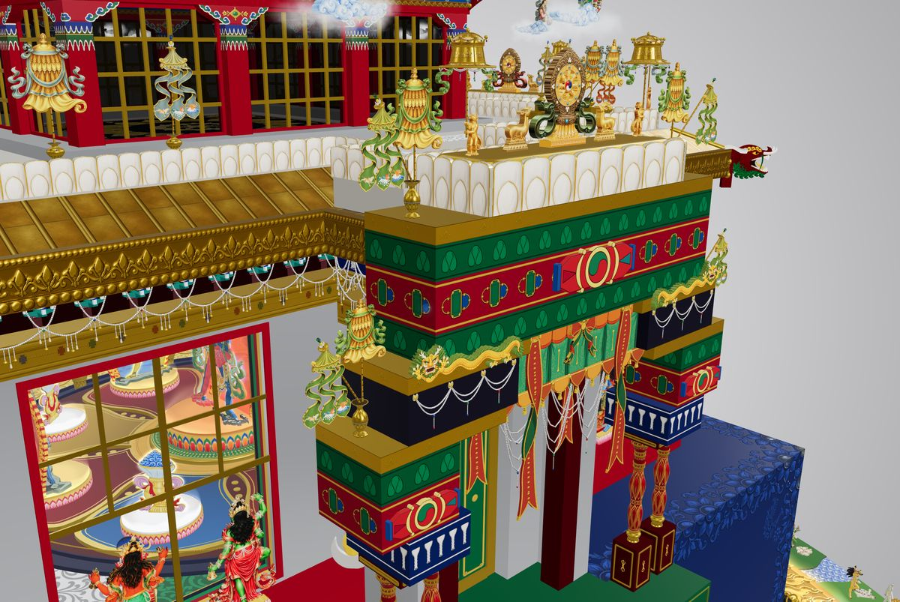

Heruka Mandala
The mandala of Ghantapa's Five-Deity Chakrasamvara in 3D: the protection circle, the charnel grounds, and the palace with everything in it. It is built strictly from the commentary of Nyidzong Tripa Döndrup Chöwang, translated by Mark Riege. Nothing is added from imagination, and every object points to the page it comes from.
You can walk around the palace and go inside, tap any object to see its name in English and Tibetan, or open the commentary at the page that describes it. I made it to help practitioners hold the generation-stage visualization, and as an offering to my teacher, Drupon Rinchen Dorjee Rinpoche. The central deities are not built yet.
The mandala is password-protected. If you have received the Chakrasamvara empowerment in the Ghantapa tradition, write to me and I'll send you the password.